It is volume 9 ( 0 1 2 3 4 5 6 7 8) this is a draft part, it may seem that I stumble around some random rhymes, but that's how I always was working and some cool stuff came out of it, so the most solid info is the first half of the first volume, all the rest is raw as odb loved it or more. several cool notes appeared afterwards, so I keep it online just in case and because ever wanted to read drafts of scientists.
Let's list the main points of this work so far:
alphabetic order has some structures if lined out in planar tables
1. when it's cut into lines beginning with vowels.
2. when it's cut into lines which has vowels in centre of lines, and some vowelless lines are allwed if they are even only. But not all alphabets can be arranged like this, but some of them arrange into it nicely, so probably even less people knew about such arrangement.
3. reflection between the halves (or folds around some important letters)
4. reading of that first arrangement when the diagonal of reflection is lined from the top left corner into the right bottom one.
These four hypotheses are arranged by the rate of my belief in them. I'm pretty sure hypothesis number 1 is numero uno indeed, it's most probably a historic arrangement, I met few records of this structure, one from a modern-day amateur scientist, one from one english book, one from one indian book. I found that structure independently and it came frist or the second after the third. (hypothesis 2 came in the 3rd, and hypothesis 4 is the most recent one, it literally was born in the end of the previous volume)
Also transcription of ancient texts cannot be trusted 100% as all the science have reflected on itself and discovered a replication crises, of which I think I was aware of, because I knew I had to do it from scratch, but I was motivated by some linguistic forum to dig further in the past to be taken more seriously, so I followed that ruiling.
Christian claims that it's them invented all those writing systems are false.
Also some open threads to ancient egyptian, music theory, both iberias, chinese, native american, african and polynesian writing systems, some mystical and mythological references, leading to whole that culture to find relating pieces and gesture language can be a source of theorizings, and there are probably more, ogham of course.
These claims are up to you to find out how credible am I, I think I trust them pretty well.
(I lay out the argumentations for them in the previous volume. here my task is to go further, and I think a good and perspective source for research is the short words of some old european language such as latin in relation to modern european languages and how the same short pieces relate in them.
a = 1, to, well I didn't expect the reference to 1 2, but here it is. a is but in russian, which also follows a.
of об
в was v in russian and б was where ё is now?
de оf
до to
is есть - why does modal word has the to in russian?
am ем
are ести
are am is as AMS
Вы Я Он
В could be the b, the prehistorically first letter.
I as the centre between A & V.
N of он is the final letter of its' line, and could be lmn the xyz of the past?
also N is ν
VIN? ni = мы? я тоже последняя. V was the last and that's W of we.
VJN? and Он as the alphabetic sequence is
чем могут быть алфавитные слова как не следом более древней системы? и слово ёж предстало как базовым как еда, и представить, что люди начинали звероловство с поедания ежей можно представить очень даже: в еже мяса как раз на раз, другие звери их скорей всего не умели ловить а человек знал, что можно тупо камнем убить его. ежи кусаются, так что да, руками ловить погано. Возможно, мы делали себе одежду из шкурок ежа. Любопытно было бы посмотреть.
Но скорей всего эта дрянь колкая, так что наверное нет. Может на щит разве что прибивали как оружие, но тоже своих же поколишь некстати. так что наверное нет. еж еда и только.
A guy contacted me about his app and I thought that he will be more interested in some other research:
https://www.youtube.com/watch?v=Znx-odtXgw8 (Global Alphabet by Yuliana Gorokhov)
and though I first thought it was purely an artistic project, watching it now I see that she speaks of historical unity of all those alphabets. And it makes her work much more interesting, and she even removes the first stroke of Л the way it obviously is a swash when you compare cursive Л and l.
but then I watch further and I notice that she doesn't reconstruct the prehistoric unity, but turns it into truly an artistic project, which makes it less interesting for me, but the latin-arabic font is cool)
And when I searched for it, alphabet ted, I found an african professor speaking of ancient arabic writing systems, and here's a tidbit:
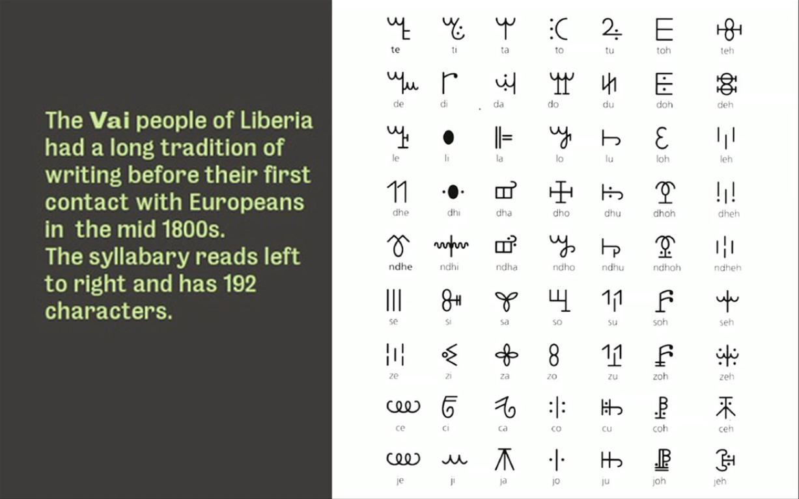
and there he recommends his book, which also contains many sources for research:
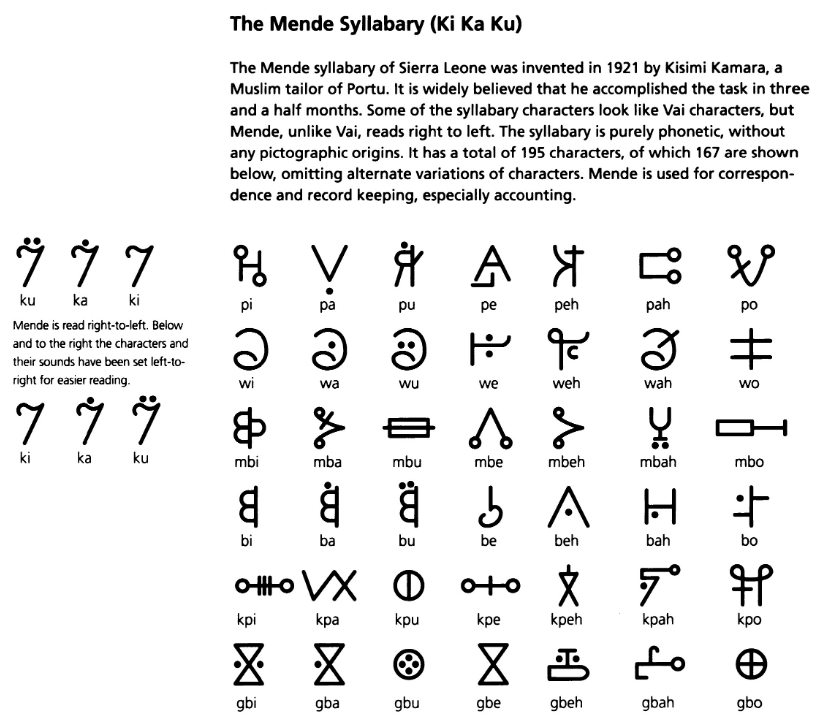
(I link it to a pirated version of his book, it also cannot into ctrlF, so it's a demo version, for all of you to see how beautiful is this book, of what perfect quality is its pictures. It seems old russian or european equipment was sent to africa and preserved there pretty well. Pirates do break some unjust laws, and I justify that because I give them free promotion, either way how am I less worthy than librusec where I found it. Sharing is caring. Pirating boosts sales because it promotes) I would mirror, but it's too big.
I selected this one image, because it can indicate how muslim missionaries also lied about their inventions, That time people knew of much more useful writing systems, why would they use african system a little, but not completely, why does it go labials first if modern scholars didn't know that? Why would it be named ki ka ku as if it has som other, the eastern order and only three vowels. And notice that signs with a i u go syllabricly with diacritic over the same sign, and other syllables are off this structure, completely arbitrary. So maybe that guy did invent it, adding his silly additional syllables to the ones used before him. to the original Ki Ka Ku. KKK is some psy-op, so it seems, it could hit africans with godly awe via these synapses, no wonder they were scared. It was a psy-op, a terrorizing.
綺麗な [kireina] is carino or carina in italian.
использование эпиграфов честно ли? Иногда читаешь эпиграф и книжку закрыл потому что и так слишком много понял. А еслидальше читать того же качества текст будет ли? У меня эпиграф строго информативный.
contiguous and contagious are similar not only by their orthography, but semantically too.
fear and affraid are connected via dutch vrees (verbal form is vrezen) or such form in old english.
I swear when I pray, does it mean I'm for sure.
(the question is are swear and sure are cognate? да, блядь!
is blядь is блять is быть? ля ы bl balaкать lalakatt. bla-bla-bla is ля-ля-ля. бl = ы because l = i and б is optional? (because in english do is duh, blatt. and english -ing swears or curses are translaterd into russian with -ed матs)
but ы is the opposite of я in this claster.
la is modified ы, ы is some abstract vowel, and probably that's how they sang before they learned to merge vowels with consonants into syllables.
ba bu bi is russian semantic name meme, so I lay it out in this oghamic order.
da du di could be да do ты or duh, du дей. opposite or not, я and ы are both of i-claster, unless у is y and я is а. are ы and я both y's and that's how it splits from where it splits into u and i (both can be a, because of bus and i's name's ai)
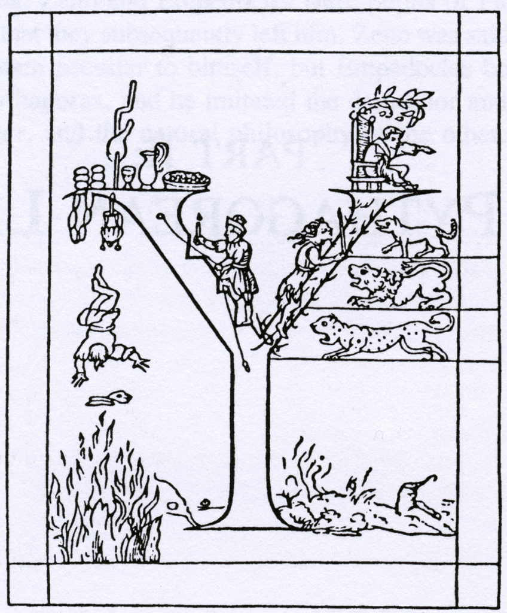
| is ו ا i
ו stands for и which is i, and and.
those knucklebones are also called astrogali and tallus. which can be related to tallysticks.
talli astrogali, probably a coincidence, or similar suffix.
https://www.academia.edu/24831681/Astragali (mirror)
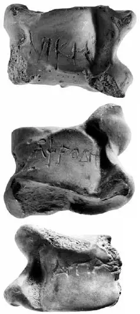
Пуруша (др.-инд. पुरुष, puruṣa IAST, «человек, мужчина, дух») — согласно индуистской мифологии, существо, из тела которого была создана Вселенная.
В Ригведе жертвоприношению Пуруши посвящён отдельный гимн — Пуруша-сукта. Пуруша — Наслаждающийся — четырнадцатое из 1000 имён Вишну.
В индийской философии термин «пуруша» означает «божественный дух», макрокосм. В философии санкхьи пуруша — множественное неподвижное мужское (духовное) космическое начало, «чистое сознание», созерцающее динамичное женское начало — пракрити (материя). Пуруши являются вечными, их основные свойства — отсутствие свойств (ниргуна). Однако Пуруша, созерцающий пракрити, склонен ошибочно идентифицировать себя с ней и с гунами.
В первоначальном учении присутствовал тезис о множественности пуруш (пуруша-бахутвам), тогда как в позднейших трактатах провозглашался уже принцип единого пуруши, наделяемого качествами, близкими к атрибутам атмана Упанишад.
перекликается с
Берешит , Берешит , Bereshis , Берейшит , B'reshith , Beresh't , Берешит , или Bereishees ( בְּרֵאשִׁית - иврит для «в начале» первое слово в parashah ) является первой еженедельно часть Торы ( פָּרָשָׁה , parashah ) в ежегодном еврейском цикле чтения Торы . Параша состоит из Бытие 1: 1–6: 8 . Берешит (парашах) - https://ru.qaz.wiki/wiki/Bereshit_(parashah)
(но это не точно)
The word renown shows that k in known is a prefix. Probably, the same as in russian к which is to.
and then now is probably now and n is a suffix of the past or done as in done and gone.
𓄿 in simpler representation can give 𐲀 as back and beak and A as legs and tail and wing and a as head and body.
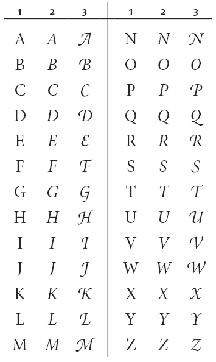
here A regains its beak as if it simply rotated its head or maybe itself in the form of A and with swash it rotates its head to its right.
Swash of G makes g even closer to d (both meet again in g being russian d)
And it gives us ABᚦ EFG
and next H is a form of I, a double I, and swashed form of J shows that it's half a I, a י (is it why they thought hebrew didn't have vowels? Because I was shorter than theirs? Then such tendency existed? Arabs spoke their semitic language at least a millenium longer and they have ה which is vowel in half of hebrew examples is completely consonant in arabic ه also why o is in the e-line? is efg actually opq?
but abc structure demands all hijkl to be one claster. and it's easy because l ~ I and h ~ ג ~ λ ~
but positionally those letters don't correlate:
א ב ג ד ה
j i h g f
ξνμλκιθ
do I wanna say g ~ κι / f ~ θ / ν ~ N ~ И?
ה~ joy / ד ~ да ~ и / ב ~ va ~ go / א ~ f as we saw it in futhark?
Can I pull every owl to every globe?
covid is cow it
go it, избегай этого, cow ~ go (уходит, не дерётся) а бык бычит? бык be, остаётся, не уходит.
to and tu
to ~ you is the semantic origin of that prefix. to ~ твоё, тебе
me ~ ne ~ моё, мне.
to ~ take
no ~ don't touch.
take ~ touch
от ~ of
oт ~ oб
to / off
до ~ то ~ to
от / до
то и ты показывают как второе и третье лицо изначально не противопоставлялось?
and вы is as a form of we? вы is the way to speak to ours, ты is a rude way to address a foe.
(ты и те, а не вы и мы)
вы и мы are both labial and it is where the first and second person pronouns meet.
вы и ты подобны c которое и с b и с d.
c ~ sie (but also Вы (U) and She and They, and is it where W and Ш meet?)
(раньше я зачастую использовал ~ и / бестолково, как придётся, теперь я вижу, что следует писать так: ~ почти что =, / значит противопоставление (like 2 to 4 is a half, for example, but that's not only possible form of antonymity, grammars are more complex than math)
both grammar and math have ma in it's base, just as music has m
three m's
not only myth, but also grammath grammar is grandma, grany говорение
math is mother. and music is the younges, maiden because other positions are taken. lala
Music is muse? Three mothers are three grandmuses?
I think I came to this conclusion before in this work.
I as a newer, individualism pronoun. Ah! Ya! some междуметие видимо взято за него.
Междуметия до сих пор не особенно частями речи воспринимаются, потому что крикнуть можно такое, что и не запишешь, как lleju which I think sounds as ee-huh, but I didn't find any other transliteration of that cowboy whoopee. [yā-who]
I is ego, literally его. Ich is literally их.
here can be the explanation why high and low sounds are named so
οπρστ could be some Pythagorean line with
ο standing for the circle
π standing for the π of περίμετρος
ρ - I expected it to stand for radius, but google translate that word as ακτίνα
σ could be square or area, square of the square's area because square's square is the square of it's side.
τ could be τετράγωνο but then I see that it's square which is quadrat, not area. area is περιοχή, with π.
diameter is διάμετρος which is literally two metres, as if radius is a metre by default, as it is often so in trigonometry.
so I don't really know greek, it's time to visit that professor with whom I worked with greek before.
π standing for both περίμετρος and περιοχή and when diametre is 1 metre, perimetre of the square is literally π, and when radius equals 1, περιοχή is literally π. I wonder why it's radius in one case and diametre in the other. weird. will return to this weird stuff later. I mean what were the chances! even if it's p>0.05, this number is totally arbitrary, so why would I care, humanities are not hard science anyway.
{kind=link}
Minazuki (水無月, "Month of Water"). The 無 character, which normally means "absent" or "there is no", is ateji here, and is only used for the na sound. In this name the na is actually a possessive particle, so minazuki means "month of water", not "month without water", and this is in reference to the flooding of the rice fields, which require large quantities of water.[15]
無 standing for no is used as na (I would never know it, because it's always bu elsewhere, actually is's wu in chinese and mu in japanese, it is bu only when it's a prefix) and here m and n meet again.
(it's irrelevant that there's no historic records of european-japanese contact before the ones we know of, because m~n unity was even before l~r unity (because both l~r is the same sign in japanese) and we have no historic records of l~r unity either, but I think it's conserved in the language iteself (мы, но нас, us, nos, uns ~ wir, nós, we, мы) is this w~m unity testifying that we ~ no (no as in nos. this w~m~n unity is supported by v~ν and whether these words are related or not, the syllable is definitely the same, that ancient w~m~n nasality, and japanese show at their nose when they say watakushi (tachi is plural suffix)
how to avoid a military conflict? abolish military complex.
(countries without mic are annexed without much bloodshed if their politicians are not polite enough to go together and in their unique way, it takes some diplomacy to be a sovereign nation, military power is nothing but bullying. And don't we all have a duty to oppose the powers which be? we shouldn't, because ghandism work, shaming bullies is powerful enough. no need to risk total annihilation, and I hope actual missiles are all secretly dismantled, and people are just not told because it's not their business, maybe later, but biological weapon is reality again, we should isolate ourselves, to protect not only from traumas but also from other forms of life trying to take our place)
that -na of no could semantically originate this way: димино ~ не дима, но рядом
не вода, но водная
Is bouquet a bucket?
проверка: прёт ли трава что взял:
Шудры рабы своих тупых фантазий
каких фантазий? желаний
шудра чувств раб
лабиализаtion of the language happened
язык не подразумевает губ
шудра - старинное слово - соло (во это часть лабиализации? even n is lingual)
m came out of n then.
б & в are the same word "in" like ν
фантзия ис э нью уорд. рашшнс донт еуен хэу ф's.
язык even vowels are lingual in that word. language is also all lingual. but губы старт with г, but unlike
if Б & В are v, then they're also of ν
M is closest to N, thus does it mean it's the first of n's?
nop are ноп in russian. and that is some labial claster together with m actually.
mnop is it why m is here? historically? to show its specific role?
is it minor? both i and r are in direct proximity
minor as this mall small sequence, in comparison to the major ones from a to u or something?
M-inor
M-ajor
r is final? t is final, but t~s~r. isn't ß β? because if r~s, p~r, p~s, b~p
once again.. can I pull any owl onto any globe? I do need some help from ai, because it's all too big for my head.
Anyway, it's spring now. Time to build. Give up the weed.
] remember blaming Hawking for using word god in his book for over hundred times or something.
[ ctrlFed vol.1 for god and it's 43 times, in 2 it's 33 mit times, in 3 it's 56, and so on.
op q r s t
up que are set
up where are set
(it's some revelation,
abcd upset
bcd беседа
bcde посидим. be, see, deй
fghi fuck?
klmno ёклмп?
pqrstu просто ёпрст?
ё is io? those two initial vowels (I wanted to say labials, whether because vowels show how the lips look: whether it's no or yes.
yes is i, ー, 一,
no is | then? but which one?
ו as u, bu, fu?
ا as a-, un-?
ן as no, and thus n~l~ל as if ל is even longer lן then ו
v~ν as ו ~ ן it wants to go in reverse, whatever I hope you all know greek and hebrew alphabets by now.
וןל
then they're the snakes? the beasts: 𓃭
Are hieroglyphs Noah's arc? Ковчег также и ковчег завета.
Каждой твари по паре? 𓃬𓃭
𓃭 is now recognized rw instead of l as in old azbukaz, but also mꜣj as if it's мяу и raw. мясу мяу мур
but l and r are also recognized transcriptions:

here I finally smoked some good letter (in the same evening, same seance)
𓃭 is the largest of the trinity of 𓃭𓆓 𓆑 or is snake the longest? Pitons could be longer than cats, piton could swallow a cat. and 𓆓 looks more like ל than ן, and ל reflects N as if LMN are all related, L mutated out of n in one direction, and M — the other.
N is common? between B&T.
N as the central letter? M was named the
a b c d e f g h i j k l m | n o p q r s t u v w x y z
they're both the central letter.
lo pk kp lose and keep?
jq joke ir ire?
the first associations make perfectly antonymic sense so far. I wasn't even sure what ire was, I though happiness, but a smoke warm gum gun it was.
hs has? gt get? (get получает, добывает, goes it, go it, goed, good? goone? gone? didn't get yet)
fu fuck you? ev eve? makes sense. eve is l'eve? love? l'öve l'ёve, ёв ~ ёб
dw dow? do? dω? cx sex? cakes? kicks? сх, спих, спихнул, перепихнулась, спит пихается? странная парочка. спихни спи ~ fall sleep slip. sleep and slip is the pair of спи и спихни.
to kick ~ пихать.
kick пих
kicks kids. was it a common joke to kick eachother? To stay alert, to stay on watch. Но такой быдляк мешал задумчивым, и его в сущности запретили. законодательно как хулиганство.
leave it now, let's go on:
cy.. and I notice that I missed a letter, and that coud be the reason cx doesnt' reflect dw
a b c d e f g h i j k l m
z y x w v u t s r q p o n
m/n is the central letter, reflects only itself and thus odd undelimo? (неделимо поровноу)
oh I missed it right here that I used c before.
by be? d as do is very cool, but in this pair is az. if it's antonyms it's ends. (alpha & omega, nachalo i konets) jesus is Az? Az esm.
az by cx dw ev fu gt hs ir jq kp lo mn
as be sex do eves fuck get have ire joke keep low man
I think my associations are caused by my sexual restraint.
Thank god I don't have ass as teh first associations.
by could be buy,
cx cakes
dw dow daw dew down dawn dew is related to dawn?
ev is even or eve (pretty much the same0
fu fuck for sure
gt get (e is соединительная глассная (е & о) in russian) literally get and got. gut is gut gu got?
hs has he's hos house have home has house
I have home, he has house.
me have home, he has house his
me and he is the opposite then.
me and thee tho too
mi is three though. ksn? akasatana.. kana.. ka-na. n as the end. after n o starts, the voicelesss counterparts, and in that N resembles Z
here there but he and thee
he was the one who made us US, made me МЫ
Mы is the pluralf form of Me, just as We is the plural form of Wo, and thus Me = Wo? Men ~ Women?
Those are two forms of first personal pronoun: Me are how men said and We is how women said?
We is a coward's way to say Me, cow way, тёлок способ.
спасибо значит пособил. -el suffix is reflected with prefix с-? съел eaeten. if this hypothesis is valid, l ~ n, but.. ел ate, съел eæten. с = with, со- = co-, en ~ in? с и в, и союз.
с и в а о к ж у я н then if ж is here, so no, but 9 is better than 8. unless it's that octal numeral system.
op is об? о?
в к с represent all forms of consonants
and а и о у я tells that я must have been e, as if я = io = ю = ё = е
а я и о у (о около кого-то, у у кого-то, у = в, then. thus only к & с are the idependently monoliteral word in russian, and they both could be c because semantically к & c are similar, if к is not to, but at.
are those forms of c related to some of the vowels? like to ɔ
около is not far from at of к около окосо, приклонился, присоседился, прислонился is the word. сон and спасть, придавить,
а я и о у
я is place of её, another word made of vowels. ея is the very same word.
и о у = ибу?
I o V?
I хуй
V пизда?
о соединительная гласная оф ו or is it meaningless poetic wandering?
I'm p biased to see мф матершинные смыслы, потому что mater is the basics, основа и материя в моём сознании отчего-то синонимичны. matter mother основатель,
но понимаешь, что это недетская тема, и как только грамоте стали обучать с малых лет, все эти мифические смыслы стали неугодны, естественно, детям ебаться рано. прикинь ещё и детей детей воспитывать. пока ты ими правишь, ты им мешаешь размножаться, что безумие. не ты, люди. я бы одобрял, ободрял бы романы своих детей способные перерости в секас?
Why is it here? Is it the decline? I'm highe for some many lines and many good ideas, such as:
snake lion snail as LNV lion is l, not n. snake is s, thus samekh? snail is literally snl. I wander in open space now, it's not much to do with anything, too far too soon. Attempt after attempt, but not in a row, leave it to boil for some time to maybe extract
Any way, I go to https://drevlit.ru/egypt_dictionary_eng.html to see what is snake in egyptian, they pair hieroglyphs there, as mayans did. And I wonder if it's true, no, it's just their trick having not too much of a relation to reality, where 1,2,3 hieroglyphs went drawn in a line, but never by two:
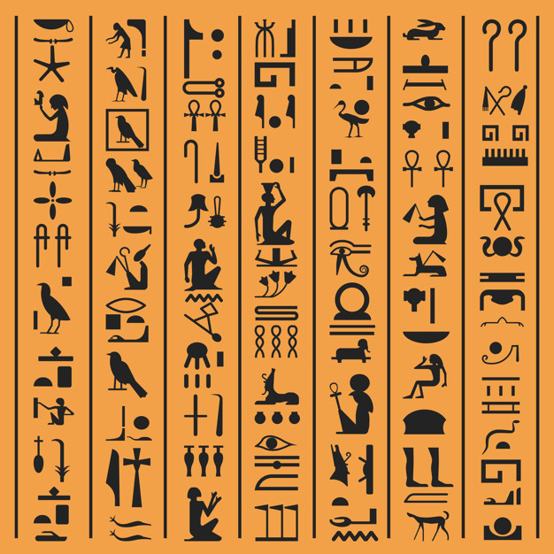
I wonder how authentic these texts are, because why would hieroglyphs looked different ways. Here's another one unreliable the same way (I think I read something about boustrophedonism of some egyptian texts, but look how lazy my research is, I don't go to check it, I leave it raw as drafts may allow, so I think that the previous and the following couple are modern collages)
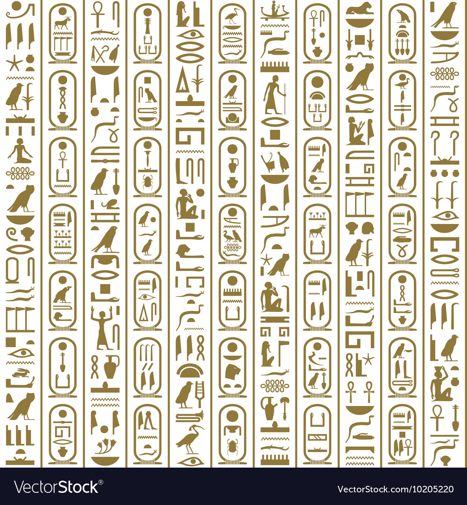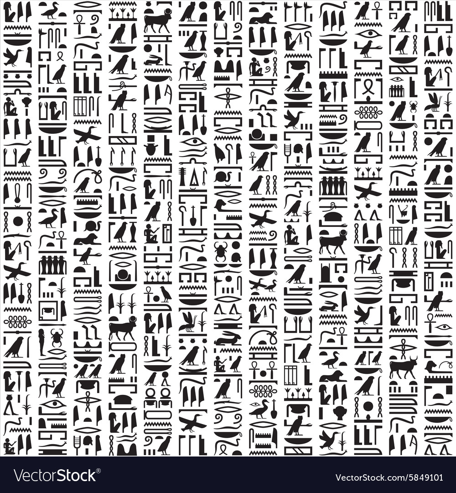
but the original text all looks the same direction:
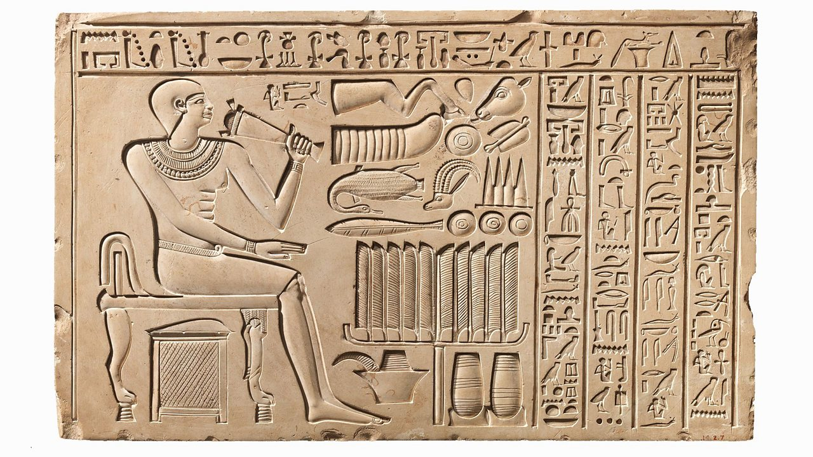
I wonder what could be said on this panno. When I know ancient egyptian so I can read it, I will compare it to this superhit:
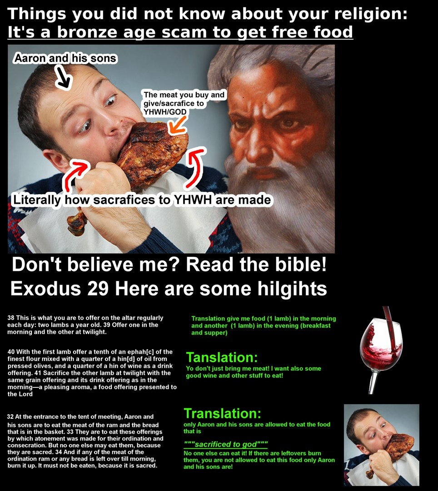
{kind=link}
I made this site a journal more than a book (my own magazine with blacksjack and hookers)
𓅓𓄿
M A
owl eagle
wife husband
is it how people saw those birds?
Just as kids think fox is wolf's wife.
did I tell of 𓄿𓅓𓅱 as amш? or is it ωMΣ?
I wrote about the first question in a notebook, not sure if I posted it here, I usually try not to double.
not to copy, but make some authentic but that ωMΣ is the new part, I wonder if it's true.
а её и
о у я
f follow e
ф follows у
if o is the beginning of the second half, and mn are the first letters, jkl are something newer. and when we spoke about fantasy being a newer word also because russians didn't have f's, then jfk is some meme. or it could be apophenia again. ai will sort it out. Or, hopefully me with my neocortex enhanced by some external additional ultra-neocortex be able to do it soon.
I keep on collecting pieces to this puzzle from some other places:
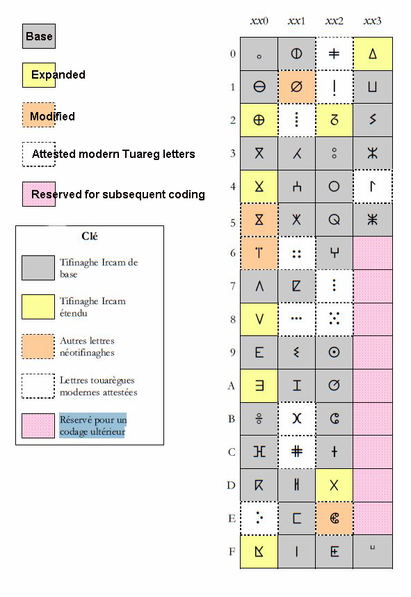
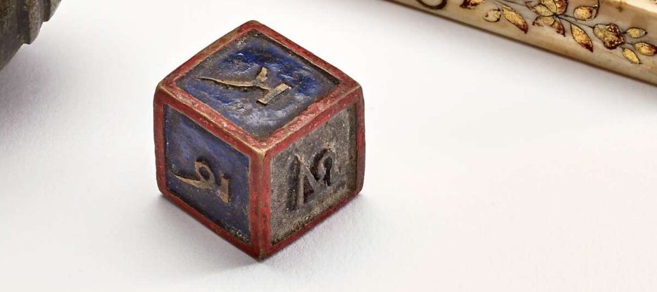
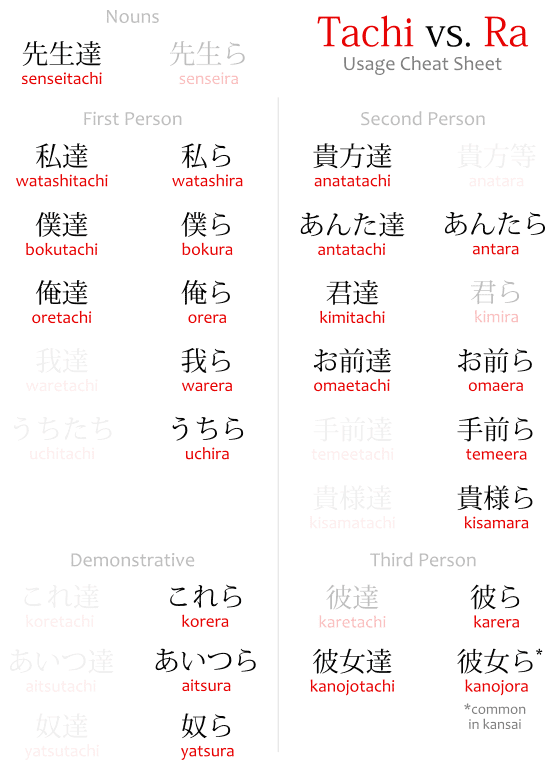(this one is here for no reason)
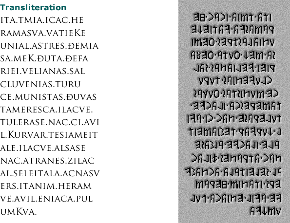
Х said about А that he's a dark (or black) genius, and she wants a white one.
So is it good to cooperate with a black wizard? Blacks tend to lose, black is bad.
Black and bad are probably cognates, human (at least russian) mind sees black a s bad.
I believe all the world does, at least the best half of it. So let's turn into white light wizards
We're heavy, we work at nights, to fully concentrate, we wouldn't sing in daylight, rockers who gig at sunlight are faking the funk so to say, they suck, maybe manson went down because of being burned by the sun. burnt out at the sun. He would never play on day light if not the money. some diamond wizards buy everyone. Love can trump diamonds. Because hearts are higher than diamonds in card games. It came to me some long time ago, who knows how legit this spades, clubs, diamonds, hearts. Spade is the грубая сила. Clubs are police, conspirators, gosudarstvo. Diamonds are bourgeoisie. Hearts are love.
God is love. How did I arrange them, I don't konw. But looks more slick than shudra, kshatri, vayshna, brahman. shudras work with spades (in russian it's пики. т.е. орки-урки здесь живут, надо их перевоспитывать. Их пытаются загнобить, типа потому что они выёбистые, но на самом деле у них гиперкомпенсация (им постоянно нужно доказывать себе (но как будто другим) что они не лохи) и восстановление их самоуважения - более разумная задача исправительных органов, которая скорее всего практикуется в скандинавии (но это не точно)
spades as water? because of the form of the sign ♠? as if a drop of water at the same base ♣ has, which is naturally three (four) balls laying at eachother. as if stones would. So clubs are solid. Thus shudra are shit (жидкие, жидкий народец было более общим понятием, которое осталось лишь как самой презренной нации чуть ли не топоним. Язык изменяем, и открыв эти неполиткореектности в языке мы можем их исправить или научиться у них. А зачем нам древние понятия, мы начнём переписывать геномы и национальность станет ещё более размытым понятием: allegence to the flag, obedience to the state, a rudiment from apes or reasonable strategy? Clubs are strong not only because they can come winning with a club against a knife. Club is a great weapon, because it can cause less open bleeding, so it's easier to control if you want to beat a man or kill em. ими и им одно слово, и просто суффикс множественного числа, известный с незапамятных времён: 𓏭
Egyptian 𓏭 is ,, т.е. и т.д.
те и тתו (' is not י)
♥ ♦ ♣ ♠
are rich people because vayshya and diamonds. And here I see that card deck and varnas have different opinions on whether vaishya higher or lower than kshatriyas. both are shudras from the pov of brahman, only vaishyas are rich shudras and kshatreys are key shudras. R & K? Shudras are S pretty much qrs, pretty much all the linguals there are (t~s because ת without dot inside is read as th in thin)
Brahman is B, the labial. so is it k before r or after? q is before r, positionally yes, but chronologically r was before q, because q is not known to many alphabets, so first there were brahmans (shamans? shaman is shudra's brahkman? from the pov of the priests) and others were divided into rich and poor? no military among men, they're all military, and only later did good warriors unite against the others? How could it happen? When good fighter commited crime and peace in the city is not possible, the murderer would probably be expelled (execution is a paradox of murder for the murder: if murder is illegal why this one is? maybe that first murder was also justified not in less degree. Also good fighters saved lives, so it's also fair to forgive them for taking one? So expelled, and have to go the other city or to live in the woods, where he'd meet such good expelled warriors as them (did it became a law that they were to be killed not to let them be fighting for the city's enemies?) and gangs fought the cities and took control there and became the rulers, and the caste in itself. Kshatriyas are probably of this origin. So were rich people still higher than warriors? Rich people would hire warriors, to make them respectable. That's Europe. They can afford it. As a result, their economy is booming. boosted. (not doomed and busted) and poorfags of the east and south stand kshatriyas above vaishyas and as a result their countries don't know how to make money.
Brahmans of those countries should teach their societies to praise the rich, not higher-archers. The one who shoots further sits higher, because he is teh best for the best position.
Because brahman should rule with love, not fear. People should love success more than they fear death.
♥ ♦ ♣ ♠ is the normal european (and unicode) order, and on the East they could arrange them as
♥ ♣ ♦ ♠ because of their tops, not their bottoms, and two balls is great, three balls are only one ball at the top, and other sharps are rich (red) and poor (чернорабочий) разница лишь в том, что у vaishya пика и сверху и снизу, а шудра с ножом, но с голой жопой. Brahman naotborot изобрёл земледелие (лопата книзу, лопаты происходят от копий, копать и копьё однокоренный однозначно (пики are spades in english, see, learn from the Europe call пики ломами, а после на лопаты переделай, лопата от слова ломать? лопасть? to пасть, ложка лопата однокоренные тоже, лопать ломать ложкой (кусок торта например) ложит (роняет) и ложит (кладёт))
There are informational conspiracy against weed:
1. Sensemila, безсемянка, какого лешего тебе нужна трава без семян, если с семенами лучше: только трусы не нуждаются в семенах, чудесных, волшебных камушков, семена колдовские объекты. Гроверы нарассказывают кучу теорий как вещества пропадают, уходя на созревание семян, но практика показывает, что одна из лучших трав, которые я куривал была с хорошими зёрнами. Я трус, кстати, мне давали самые большие семена что я в жизни видел, я их проебал. Тупо проебал, может парочку друзьям подаривши, глупо, тупо, мудово. Русы трусы, в моём случае это точно. Мы слишком много думаем о самом худшем что может случиться, это у меня от бати, русские вайшьи же предприимчивы, они любят успех больше чем боятся неудачи. И как при слиянии шудры с вайшьей мог получиться брахман (искатель знания, а не чувственных удовольствий)
2. Vaporizer, also 9 letters (10 if sensemilla or sensemilja and vaporizers) whenever I smoked it, it only gave some body high, but no mind-high. And when my friend smoked the dark brown aftermath the next morning he got that mind-high of the top notch, thus all the substance was left in ther,
3. Hydroponic, thus it's 10 letters. as in Parliament and Funkadelic too, actually.is psychidelic also 10 because ps is one letter?
I smoked hydro after I smoked.. what? The best grower I know grows in soil saying that hydro is not his kind of thing. And I smoked something I knew was hydro and I thought that hydroponic is probably another element of this conspiracy, and this formal similarity indicates that it can quite be (I didnt know of this 10-letter thing before I began writing this text, it came to me as I typed.
Relaxe e viva meu nego Leve a vida que você quer
does it indicate the queer is he who wants, хочет, ищет, искать ~ ask,
and google translator reads it so weirdly: Relaxe sounds from portugese as helashi.
R isn't only looks like cursive h, it also sounds like that sometimes.
other words didn't raise questions (final r is not even heard, as h would be)
efgh
opqr
r is a form of h, it' clear now, and finally explains h's position better than I could before.
Learn phonetics of all european (and other) languages, this I can do, it's more achievable than learning them all. Lexics doesn't matter, and in the end I will find the international set of necessary toki pona.
Relájate y vive mi negro, toma la vida que quieras
in spanish R is R, but what's surprising v sounds as b
Labials are labials nobody guarantees anything else about them.
Beba Veva sounds exactly the same in spanish? If google doesn't fool me, I think why would they.
Just as B sounds as V in russian, so V sounds as B in spanish. Is it the letter we should use instead of б? but б reflects д and Б reflects Д in a way, so why would we miss it, especially since B is Б in english, so why would we differ? and if use V, use it as V, so transfer to latin where you can? ц = ts, ч = ch, ш = sh, щ = sch. Take brittish orthography and they will love us for them. It's a source of love that will cost us rien. Nothing, rien, not rein. not reign, though people will read foreign press more. We'll be as european as poland. Russians will become more european than Vietnamese when they accept the superiority of latin script.
啊 is so dense it merges into black rectangles in some fonts.
- – — − + 一(japanese1) ー(japanese longis) ꟷ(sideways I)
♭♯♀♂ ß ſ šʃ þθð θѲѳ ʒ ð ŋ «» „“ Åå ʌɔæ Ґґ ͰͱⱵⱶ Єє Її Ϻ Ϲϲ. Ⲥ ₹ 卍卐 ᚹꝨꝩǷƿ°◯⬤🜁🜃🜂🜄
अआइईउऊऋॠऌॡएऐओऔअंअःकखगघङहचछजझञयशटठडढणरषतथधनलसपफबभमव ०१२३४५६७८९
ᛆᛒᚦᚾᚠᚵᚼ(or ᛡ)ᛁᚴᛚᛘ(even though it looks like ᛉ)ᚿᚮᚱᛦ(if R, or ᛣ if Q)ᛋᛏᚢ of bornholm runes
ᚡᚣᚤᚥᚧᚨᚩᚪᚫᚬᚭᚯᚰᚲᚳᚶᚷᚸᚹᚺᚻᚽᛀᛂᛃᛄᛅᛇᛊᛌᛍᛎᛐᛑᛓᛔᛕᛖᛗᛙᛛᛜᛝᛞᛟᛠᛢᛤᛥᛦᛧᛨᛩᛪ᛫᛬᛭ᛮᛯᛰᛱᛲᛳᛴᛵᛶᛷᛸ (norsk, L2R)
𐲀𐲁𐲂𐲃𐲄𐲅𐲆𐲇𐲈𐲉𐲊𐲋𐲌𐲍𐲎𐲏𐲐𐲑𐲒𐲓𐲔𐲕𐲖𐲗𐲘𐲙𐲚𐲛𐲜𐲝𐲞𐲟𐲠𐲡𐲢𐲣𐲤𐲥𐲦𐲧𐲨𐲩𐲪𐲫𐲬𐲭𐲮𐲯𐲰𐲱𐲲(old hungarian)
𐳀𐳁𐳂𐳃𐳄𐳅𐳆𐳇𐳈𐳉𐳊𐳋𐳌𐳍𐳎𐳏𐳐𐳑𐳒𐳓𐳔𐳕𐳖𐳗𐳘𐳙𐳚𐳛𐳜𐳝𐳞𐳟𐳠𐳡𐳢𐳣𐳤𐳥𐳦𐳧𐳨𐳩𐳪𐳫𐳬𐳭𐳮𐳯𐳰𐳱𐳲 𐳺𐳻𐳼𐳽𐳾𐳿 (old hungarian & next R2L)
𐰀𐰁𐰂𐰃𐰄𐰅𐰆𐰇𐰈𐰉𐰊𐰋𐰌𐰍𐰎𐰏𐰐𐰑𐰒𐰓𐰔𐰕𐰖𐰗𐰘𐰙𐰚𐰛𐰜𐰝𐰞𐰟𐰠𐰡𐰢𐰣𐰤𐰥𐰦𐰧𐰨𐰩𐰪𐰫𐰬𐰭𐰮𐰯𐰰𐰱𐰲𐰳𐰴𐰵𐰶𐰷𐰸𐰹𐰺𐰻𐰼𐰽𐰾𐰿𐱀𐱁𐱂𐱃𐱄𐱅𐱆𐱇𐱈(old turkic)
𐩠 𐩡 𐩢 𐩣 𐩤 𐩥 𐩦 𐩧 𐩨 𐩩 𐩪 𐩫 𐩬 𐩭 𐩮 𐩯 𐩰 𐩱 𐩲 𐩳 𐩴 𐩵 𐩶 𐩷 𐩸 𐩹 𐩺 𐩻 𐩼 𐩽 𐩾 𐩿 (Old South Arabian, R to L)
א ב ג ד ה ו ז ח
ט י כ ל מ נ ס ע פ צ ק ר ש ת ך ם 𐡌
ן ףץ בּ
ا ب پ ت ث ج چ ح خ د ذ ر ز ژ س ش ص ض ط ظ ع غ ف ق ک گ ل م ن ه و ی
ΑΒΓΔΕΖΗΘΙΚΛΜΝΞΟΠΡΣΤΥΦΧΨΩαβγδεζηθικλμνξοπρσ/ςτυφχψωͰͱⱵⱶᾺὰΆάᾹᾱᾸᾰĒɛ̄ΈέῈὲΉήῊὴῙῑῘῐῚὶῒΊίΐΌόῸὸῩῡΎύΰῪὺῢῨῠϓΏώῺὼا ب پ ت ث ج چ ح خ د ذ ر ز ژ س ش ص ض ط ظ ع غ ف ق ک گ ل م ن ه و ی
ა ბ გ დ ე ვ ზ თ ი კ ლ მ ნ ო პ ჟ რ ს ტ უ ფ ქ ღ ყ შ ჩ ც ძ წ ჭ ხ ჯ ჰ (vdo)
ⲀⲁⲂⲃⲄⲅⲆⲇⲈⲉⲊⲋⲌⲍⲎⲏⲐⲑⲒⲓⲔⲕⲖⲗⲘⲙⲚⲛⲜⲝⲞⲟⲠⲡⲢⲣⲤⲥⲦⲧⲨⲩⲪⲫⲬⲭⲮⲯⲰⲱϢϣϤϥϦϧϨϩϪϫϬϭϮϯϰϱϲϳϴϵ϶ϷϸϹϺϻϼϽϾϿ
ⲲⲳⲴⲵⲶⲷⲸⲹⲺⲻⲼⲽⲾⲿⳀⳁⳂⳃⳄⳅⳆⳇⳈⳉⳊⳋⳌⳍⳎⳏⳐⳑⳒⳓⳔⳕⳖⳗⳘⳙⳚⳛⳜⳝⳞⳟⳠⳡⳢⳣⳤ⳥⳦⳧⳨⳩⳪ⳫⳬⳭⳮ⳯⳰⳱Ⳳⳳ⳹⳺⳻⳼⳽⳾⳿
ͰͱͲͳʹ͵Ͷͷͺͻͼͽ;Ϳ΄΅Ά·ΈΉΊΌΎΏΐΪΫάέήίΰϊϋόύώϏϐϑϒϓϔϕϖϗϘϙϚϛϜϝϞϟϠϡ
𐎀a 𐎁b 𐎂c 𐎃ḫ 𐎄d 𐎅h(e) 𐎆w 𐎇z 𐎈ḥ 𐎉θ 𐎊и 𐎋 𐎌 𐎍 𐎎 𐎏 𐎐 𐎑 𐎒 𐎓 𐎔 𐎕 𐎖 𐎗 𐎘 𐎙 𐎚 𐎛 𐎜 𐎝 𐎟
𐎠 𐎣 𐎧 𐎥 𐎨 𐏂 𐎩 𐎫 𐎰 𐎭 𐎱 𐎳 𐎲 𐎴 𐎶 𐎹 𐎺 𐎼 𐎾 𐎿 𐏀 𐏁 𐏃 𐎡 𐎪 𐎮 𐎷 𐎻 𐎢 𐎤 𐎦 𐎬 𐎯 𐎵 𐎸 𐎽
𐎠a 𐎡i 𐎢 u 𐎣k 𐎤ku 𐎥g 𐎦gu 𐎧x 𐎨c 𐎩j 𐎪ji 𐎫t 𐎬tu 𐎭d 𐎮di 𐎯du 𐎰θ 𐎱p 𐎲b 𐎳f 𐎴n 𐎵nu 𐎶m 𐎷mi 𐎸mu 𐎹y 𐎺v 𐎻vi 𐎼r 𐎽ru 𐎾l 𐎿s 𐏀z 𐏁š 𐏂ç 𐏃h (Old Persian)
ⴰⴱⴲⴳⴴⴵⴶⴷⴸⴹⴺⴻⴼⴽⴾⴿⵀⵁⵂⵃⵄⵅⵆⵇⵈⵉⵊⵋⵌⵍⵎⵏⵐⵑⵒⵓⵔⵕⵖⵗⵘⵙⵚⵛⵜⵝⵞⵟⵠⵡⵢⵣⵤⵥⵦⵧ⵰ ⵿ ⵯ
ⰀⰁⰂⰃⰄⰅⰆⰇⰈⰉⰊⰋⰌⰍⰎⰏⰐⰑⰒⰓⰔⰕⰖⰗⰘⰙⰚⰛⰜⰝⰞⰟⰠⰡⰢⰣⰤⰥⰦⰧⰨⰩⰪⰫⰬⰭⰮ
ⰰⰱⰲⰳⰴⰵⰶⰷⰸⰹⰺⰻⰼⰽⰾⰿⱀⱁⱂⱃⱄⱅⱆⱇⱈⱉⱊⱋⱌⱍⱎⱏⱐⱑⱒⱓⱔⱕⱖⱗⱘⱙⱚⱛⱜⱝⱞ
І і Ѳ ѳ Ѣ ѣ Ѵ ѵ Ѕ ѕ Ѯ ѯ Ѱ ѱ Ѡ ѡ Ѫ ѫ Ѧ ѧ Ѭ ѭ Ѩ ѩ Ꙋ ꙋ
А́А̀ӐӑА̄а̄А̊А̃ӒӒ̄В̌ӘӘ́Ә̃ӚӔҐҒГ̧Г̑Г̄Г̣Г̌ҔӺҒ̌ӶЃѓԀԂꚂꚀꚈД̆Д̣ԪԬД̆ӖӗЕ̄Е̃ЀѐЁЁ̄ЄЄ̈ӁӂҖꚄӜԄҘӞЗ̌З̱З̣З́ԐԐ̈ӠԆЅӢӣҊӤ
И́ЍѝІЇЈЉҚӃҠҞҜԞК̣ЌќԚӅԮԒԠԈԔӍӉҢԨӇҤԢԊЊО́О̀О̆О̂О̃О̄ӦӦ̄ӨӨ̄Ө́Ө̆ӪҨԤҦР̌ҎԖҪС́С̣С̱ԌТ̌Т̣ꚐҬꚊЋЂꚌԎ
У̃ӮӯӰӰ́ӲЎўҮ́ҰХ̣Х̱Х̮Х̑ҲӼӾҺҺ̈ԦꚔҴꚎЏҶӴӋҸꚒꚖꚆҼҾЫ̆Ы̄ӸҌЭ̆Э̄Э̇ӬӬ́Ӭ̄Ю̆Ю̈Ю̈́Ю̄Я̆Я̄Я̈ԘԜӀ
ꙀꙂꙄꙆꙈҀѺѸꙊѠѼꙌѾꙎѢꙐꙒꙔꙖѤѦꙘѪꙚѨꙜѬѮѰѲѳѴѶꙞꙠꙤꙦꙨꙪꙬꙮꚘꚚЙ
p̪ b̪ t̪ d̪ ʈɖɓ̥ɓɗ̪ɗpʼt̪ʼtʼʈʼm̥ mɱ̊ɱn̪̊ n̪ n̥ nɳ̊ɳʙr̥ rɭ̆ɺ̣ⱱ̟ ⱱɾ*(ɽɺ)ɸβfvθðszʃʒʂʐɧɬɮꞎsʼʃʼɬʼʬʭβ̞̊ β̞ ʋ̥ʋð̞ ɹ̥ɹɻ̊ɻɥ̊ɥl̥ lɭʘǀ(ʇ)ǃ(ʗ)ǂ(⨎)*(ǁʖ)ǁȶȡcɟk͡pɡ͡bkɡqɢʡʔʄɠʛcʼkʼqʼȵɲŋ͡mŋɴʀ**(ʡʡ̆)*(ʎ̆)*(ʟʟ̆)ɕʑçʝxɣχʁħʕʜʢhɦjʍwɰȴʎʟ (wiki)
aäɑɒæbḇβcčɔɕçdḏdʸǰðḍɖdˁeəɚɛɝfgḡɣhʰḤḥħḫχẖçiɪỉɨjỉʲǰʤʒkḳḵlḷɭɬɫmnŋṇɳɲñɴoŏɸθpp̅ þθðqrɹɾᴅʀʁṛɽsšʃśɕṣʂsˁštṭʈtˁṯtʸčʨuʊŭüvʌɣwʍxχyʸʎzẓʐzˁðˁžʒ’‘ʔʕ Œœ ɨʉɯuɪʏɪ̈ʊ̈ʊeøɘɵɤoəɛœɜɞʌɔæɐaɶɑɒ
Ææ Øø Åå Ää Öö Üü ẞß ā ē ī ō ū ǖ á é í ó ú ǘ ǎ ě ǐ ǒ ǔ ǚ à è ì ò ù ǜ â ê î ô û
ĀāĀ́ā́Ā̀ā̀Ā̂ā̂Ā̃ā̃ǞǟĀ̈ā̈ǠǡA̱a̱Å̄å̄ǢǣB̄b̄ḆḇC̄c̄C̱c̱D̄d̄ḎḏĒēḖḗḔḕĒ̂ē̂Ē̃ē̃Ê̄ê̄E̱e̱Ë̄ë̄E̊̄e̊̄ḠḡG̱g̱H̱ẖĪīĪ́ī́Ī̀ī̀Ī̂ī̂Ī̃ī̃I̱i̱J̄j̄J̱j̱ḴḵL̄l̄ḸḹḺḻM̄m̄M̱m̱N̄n̄ṈṉŌōṒṓṐṑŌ̂ō̂Ō̃ō̃ȪȫŌ̈ō̈ǬǭȬȭȰȱO̱o̱Ø̄ø̄Œ̄œ̄P̄p̄P̱p̱Q̄q̄R̄r̄ṞṟṜṝS̄s̄S̱s̱T̄t̄ṮṯŪūŪ́ū́Ū̀ū̀Ū̂ū̂Ū̃ū̃U̇̄u̇̄ǕǖṺṻṲ̄ṳ̄U̱u̱V̄v̄W̄w̄X̄x̄X̱x̱ȲȳȲ́ȳ́Ȳ̀ȳ̀Ȳ̃ȳ̃Y̱y̱Z̄z̄Ẕẕ
ÁáẤấĀ́ā́ẮắǺǻĄ́ą́ǼǽB́b́ĆćĆ̣ć̣ḈḉD́d́ÉéẾếḖḗĖ́ė́Ę́ę́É̩é̩ə́ɚ́F́f́ǴǵH́h́ÍíĪ́ī́i̇́Į́į̇́ḮḯJ́ȷ́ḰḱĹĺḾḿŃńÓóỐốỚớṌṍṒṓÓ̩ó̩Ǫ́ǫ́ǾǿƆ́ɔ́ṔṕQ́q́ŔশṤṥT́t́ÚúǗǘỨứṸṹŪ́ū́Ų́ų́V́v́Ʌ́ʌ́ẂẃX́x́ÝýȲ́ȳ́Źź
ǍǎB̌b̌ČčČ̣č̣ĎďĚěÊ̌ê̌F̌f̌ǦǧȞȟǏǐJ̌ǰǨǩĽľM̌m̌ŇňǑǒP̌p̌Q̌q̌ŘřŘ̩ř̩ŠšṦṧŤťǓǔǙǚV̌v̌W̌w̌X̌x̌Y̌y̌ŽžǮǯ
ĂăẮắẰằẲẳẴẵẶặC̆c̆ĔĕḜḝĞğḪḫĬĭK̆k̆M̆m̆N̆n̆ŎŏŒ̆œ̆P̆p̆R̆r̆T̆t̆ŬŭV̆v̆X̆x̆Y̆y̆
ÀàẦầĀ̀ā̀ẰằÆ̀æ̀ÈèỀềḔḕÈ̩è̩ə̀ɚ̀H̀h̀ÌìĪ̀ī̀i̇̀K̀k̀M̀m̀ǸǹÒòỜờỒồṐṑÒ̩ò̩ɔ̀R̀r̀S̀s̀T̀t̀ÙùŪ̀ū̀ǛǜỪừV̀v̀ʌ̀ẀẁX̀x̀ỲỳȲ̀ȳ̀Z̀z̀
ÂâẤấẦầẨẩĀ̂ā̂ẪẫẬậB̂b̂Ḇ̂ḇ̂ĈĉC̭c̭D̂d̂ḒḓÊêḘḙẾếỀềỂểÊ̄ê̄Ē̂ē̂Ê̌ê̌ỄễỆệĜĝĤĥH̭h̭ÎîĪ̂ī̂I̭i̭Ī̭ī̭ĴĵK̂k̂L̂l̂ḼḽM̂m̂N̂n̂ṊṋÔôỐốỒồỔổŌ̂ō̂ỖỗỘộR̂r̂R̭r̭ŜŝT̂t̂ṰṱÛûŪ̂ū̂ṶṷV̂v̂ŴŵX̂x̂ŶŷẐẑ
ÃãẢảȦȧẠạÄäÅåḀḁĄąᶏȺⱥȀȁẤấẦầẪẫẨẩẬậẮắẰằẴẵẲẳẶặǺǻǠǡǞǟȀȁȂȃⱭɑᴀⱯɐɒＡａÆæǼǽǢǣꜲꜳꜴꜵꜶꜷꜸꜹꜺꜻ
– k s t n h m y r w
a あア かカ さサ たタ なナ はハ まマ やヤ らラ わワ
i いイ きキ しシ ちチ にニ ひヒ みミ ※ りリ ゐヰ
u うウ くク すス つツ ぬヌ ふフ むム ゆユ るル ※ んン (n) ゛ ゜
e えエ けケ せセ てテ ねネ へヘ めメ ※ れレ ゑヱ
o おオ こコ そソ とト のノ ほホ もモ よヨ ろロ をヲ ・。
𓄿 𓇋 𓇌(𓏭) 𓂝 𓅱(𓏲
a i ij a(o?) u b p f m n r h ḥ ḫ ẖ
𓋴(
s s š ḳ(q) k g t ch d dj
𓎤(
g m n t (hieroglyphs list) (dictionary)
𓀀𓀁𓀂𓀃𓀄𓀅𓀆𓀇𓀈𓀉𓀊𓀋𓀌𓀍𓀎𓀏𓀐𓀑𓀒𓀓𓀔𓀕𓀖𓀗𓀘𓀙𓀚𓀛𓀜𓀝𓀞𓀟𓀠𓀡𓀢𓀣𓀤𓀥𓀦𓀧𓀨𓀩𓀪𓀫𓀬𓀭𓀮𓀯𓀰𓀱𓀲𓀳𓀴𓀵𓀶𓀷
𓀸𓀹𓀺𓀻𓀼𓀽𓀾𓀿𓁀𓁁𓁂𓁃𓁄𓁅𓁆𓁇𓁈𓁉𓁊𓁋𓁌𓁍𓁎𓁏𓁐𓁑𓁒𓁓𓁔𓁕𓁖𓁗𓁘𓁙𓁚𓁛𓁜𓁝𓁞𓁟𓁠𓁡𓁢𓁣𓁤𓁥𓁦𓁧𓁨𓁩𓁪𓁫𓁬𓁭𓁮𓁯𓁰𓁱𓁲𓁳𓁴𓁵
𓁶𓁷𓁸𓁹𓁺𓁻𓁼𓁽𓁾𓁿𓂀𓂁𓂂𓂃𓂄𓂅𓂆𓂇𓂈𓂉𓂊𓂋𓂌𓂍𓂎𓂏𓂐𓂑𓂒𓂓𓂔𓂕𓂖𓂗𓂘𓂙𓂚𓂛
𓂜𓂝𓂞𓂟𓂠𓂡𓂢𓂣𓂤𓂥𓂦𓂧𓂨𓂩𓂪𓂫𓂬𓂭𓂮𓂯𓂰𓂱𓂲𓂳𓂴𓂵𓂶𓂷𓂸𓂹𓂺𓂻𓂼𓂽𓂾𓂿𓃀𓃁𓃂𓃃𓃄𓃅𓃆𓃇𓃈
𓃉𓃊𓃋𓃌𓃍𓃎𓃏𓃐𓃑𓃒𓃓𓃔𓃕𓃖𓃗𓃘𓃙𓃚𓃛𓃜𓃝𓃞𓃟𓃠𓃡𓃢𓃣𓃤𓃥𓃦𓃧𓃨𓃩𓃪𓃫𓃬𓃭𓃮𓃯𓃰𓃱𓃲𓃳𓃴𓃵𓃶
𓃷𓃸𓃹𓃺𓃻𓃼𓃽𓃾𓃿𓄀𓄁𓄂𓄃𓄄𓄅𓄆𓄇𓄈𓄉𓄊𓄋𓄌𓄍𓄎𓄏𓄐𓄑𓄒𓄓𓄔𓄕𓄖𓄗𓄘𓄙𓄚𓄛𓄜𓄝𓄞𓄟𓄠𓄡𓄢𓄣𓄤𓄥𓄦𓄧𓄨𓄩𓄪𓄫
𓄬𓄭𓄮𓄯𓄰𓄱𓄲𓄳𓄴𓄵𓄶𓄷𓄸𓄹𓄺𓄻𓄼𓄽𓄾𓄿𓅀𓅁𓅂𓅃𓅄𓅅𓅆𓅇𓅈𓅉𓅊𓅋𓅌𓅍𓅎𓅏
𓅐𓅑𓅒𓅓𓅔𓅕𓅖𓅗𓅘𓅙𓅚𓅛𓅜𓅝𓅞𓅟𓅠𓅡𓅢𓅣𓅤𓅥𓅦𓅧𓅨𓅩𓅪𓅫𓅬𓅭𓅮𓅯𓅰
𓅱𓅲𓅳𓅴𓅵𓅶𓅷𓅸𓅹𓅺𓅻𓅼𓅽𓅾𓅿𓆀𓆁𓆂𓆃𓆄𓆅𓆆𓆇𓆈𓆉𓆊𓆋𓆌𓆍𓆎𓆏𓆐𓆑𓆒𓆓𓆔𓆕𓆖𓆗𓆘𓆙𓆚
𓆛𓆜𓆝𓆞𓆟𓆠𓆡𓆢𓆣𓆤𓆥𓆦𓆧𓆨𓆩𓆪𓆫𓆬𓆭𓆮𓆯𓆰𓆱𓆲𓆳𓆴𓆵𓆶𓆷𓆸𓆹𓆺𓆻𓆼𓆽𓆾𓆿𓇀𓇁𓇂𓇃𓇄𓇅𓇆𓇇𓇈𓇉𓇊𓇋𓇌𓇍𓇎𓇏𓇐
𓇑𓇒𓇓𓇔𓇕𓇖𓇗𓇘𓇙𓇚𓇛𓇜𓇝𓇞𓇟𓇠𓇡𓇢𓇣𓇤𓇥𓇦𓇧𓇨𓇩𓇪𓇫𓇬𓇭𓇮𓇯𓇰𓇱𓇲𓇳𓇴𓇵𓇶𓇷𓇸𓇹𓇺𓇻𓇼𓇽𓇾𓇿𓈀𓈁𓈂𓈃𓈄𓈅𓈆𓈇𓈈
𓈉𓈊𓈋𓈌𓈍𓈎𓈏𓈐𓈑𓈒𓈓𓈔𓈕𓈖𓈗𓈘𓈙𓈚𓈛𓈜𓈝𓈞𓈟𓈠𓈡𓈢𓈣𓈤𓈥𓈦𓈧𓈨𓈩𓈪𓈫𓈬𓈭𓈮𓈯𓈰𓈱𓈲𓈳𓈴𓈵𓈶𓈷𓈸𓈹
𓈺𓈻𓈼𓈽𓈾𓈿𓉀𓉁𓉂𓉃𓉄𓉅𓉆𓉇𓉈𓉉𓉊𓉋𓉌𓉍𓉎𓉏𓉐𓉑𓉒𓉓𓉔𓉕𓉖𓉗𓉘𓉙𓉚𓉛𓉜𓉝𓉞𓉟𓉠𓉡𓉢𓉣𓉤𓉥𓉦𓉧𓉨𓉩𓉪𓉫𓉬𓉭
𓉮𓉯𓉰𓉱𓉲𓉳𓉴𓉵𓉶𓉷𓉸𓉹𓉺𓉻𓉼𓉽𓉾𓉿𓊀𓊁𓊂𓊃𓊄𓊅𓊆𓊇𓊈𓊉𓊊𓊋𓊌𓊍𓊎𓊏𓊐𓊑𓊒𓊓𓊔𓊕𓊖𓊗𓊘𓊙𓊚𓊛𓊜𓊝𓊞𓊟𓊠𓊡𓊢𓊣𓊤𓊥
𓊦𓊧𓊨𓊩𓊪𓊫𓊬𓊭𓊮𓊯𓊰𓊱𓊲𓊳𓊴𓊵𓊶𓊷𓊸𓊹𓊺𓊻𓊼𓊽𓊾𓊿𓋀𓋁𓋂𓋃𓋄𓋅𓋆𓋇𓋈𓋉𓋊𓋋𓋌𓋍𓋎𓋏𓋐𓋑𓋒𓋓𓋔𓋕𓋖𓋗𓋘𓋙𓋚𓋛𓋜
𓋝𓋞𓋟𓋠𓋡𓋢𓋣𓋤𓋥𓋦𓋧𓋨𓋩𓋪𓋫𓋬𓋭𓋮𓋯𓋰𓋱𓋲𓋳𓋴𓋵𓋶𓋷𓋸𓋹𓋺𓋻𓋼𓋽𓋾𓋿𓌀𓌁𓌂𓌃𓌄𓌅𓌆𓌇𓌈𓌉𓌊𓌋𓌌𓌍𓌎𓌏𓌐𓌑𓌒𓌓𓌔𓌕𓌖𓌗𓌘𓌙
𓌚𓌛𓌜𓌝𓌞𓌟𓌠𓌡𓌢𓌣𓌤𓌥𓌦𓌧𓌨𓌩𓌪𓌫𓌬𓌭𓌮𓌯𓌰𓌱𓌲𓌳𓌴𓌵𓌶𓌷𓌸𓌹𓌺𓌻𓌼𓌽𓌾𓌿𓍀𓍁𓍂𓍃𓍄𓍅𓍆𓍇𓍈𓍉𓍊𓍋𓍌𓍍𓍎𓍏𓍐𓍑𓍒𓍓
𓍔𓍕𓍖𓍗𓍘𓍙𓍚𓍛𓍜𓍝𓍞𓍟𓍠𓍡𓍢𓍣𓍤𓍥𓍦𓍧𓍨𓍩𓍪𓍫𓍬𓍭𓍮𓍯𓍰𓍱𓍲𓍳𓍴𓍵𓍶𓍷𓍸𓍹𓍺𓍻𓍼𓍽𓍾𓍿𓎀𓎁𓎂𓎃𓎄
𓎅𓎆𓎇𓎈𓎉𓎊𓎋𓎌𓎍𓎎𓎏𓎐𓎑𓎒𓎓𓎔𓎕𓎖𓎗𓎘𓎙𓎚𓎛𓎜𓎝𓎞𓎟𓎠𓎡𓎢𓎣𓎤𓎥𓎦𓎧𓎨𓎩𓎪𓎫𓎬𓎭𓎮𓎯𓎰𓎱𓎲𓎳𓎴𓎵𓎶𓎷𓎸𓎹𓎺𓎻𓎼𓎽
𓎾𓎿𓏀𓏁𓏂𓏃𓏄𓏅𓏆𓏇𓏈𓏉𓏊𓏋𓏌𓏍𓏎𓏏𓏐𓏑𓏒𓏓𓏔𓏕𓏖𓏗𓏘𓏙𓏚𓏛𓏜𓏝𓏞𓏟𓏠𓏡𓏢𓏣𓏤𓏥𓏦𓏧𓏨𓏩𓏪𓏫𓏬𓏭𓏮𓏯𓏰𓏱𓏲𓏳𓏴𓏵𓏶𓏷𓏸
𓏹𓏺𓏻𓏼𓏽𓏾𓏿𓐀𓐁𓐂𓐃𓐄𓐅𓐆𓐇𓐈𓐉𓐊𓐋𓐌𓐍𓐎𓐏𓐐𓐑𓐒𓐓𓐔𓐕𓐖𓐗𓐘𓐙𓐚𓐛𓐜𓐝𓐞𓐟𓐠𓐡𓐢𓐣𓐤𓐥𓐦𓐧𓐨𓐩𓐪𓐫𓐬𓐭𓐮
᚛ ᚁᚂᚃᚄᚅ ᚆᚇᚈᚉᚊ ᚋᚌᚍᚎᚏ ᚐᚑᚒᚓᚔ ᚕᚖᚗᚘᚙᚚ᚜
𐤀 𐤁 𐤂 𐤃 𐤄 𐤅 𐤆 𐤇 𐤈 𐤉 𐤊 𐤋 𐤌 𐤍 𐤎
𐤏 𐤐 𐤑 𐤒 𐤓 𐤔 𐤕 𐤖 𐤚 𐤛 𐤗
𐤘 𐤙
𐬹𐬺𐬻𐬼𐬽𐬾𐬿 𐬀𐬁𐬂𐬃𐬄𐬅𐬆𐬇𐬈𐬉𐬊𐬋𐬌𐬍𐬎𐬏𐬐𐬑𐬒𐬓𐬔𐬕𐬖𐬗𐬘𐬙𐬚𐬛𐬜𐬝𐬞𐬟𐬠𐬡𐬢𐬣𐬤𐬥𐬦𐬧𐬨𐬩𐬪𐬫𐬬𐬭𐬮𐬯𐬰𐬱𐬲𐬳𐬴𐬵
some tricky :: ׃ ּ∴ஃ⋮…⋯⸽𐬹𐬺𐬻𐬼𐬽𐬾𐬿 𐬀𐬁𐬂𐬃𐬄𐬅𐬆𐬇𐬈𐬉𐬊𐬋𐬌𐬍𐬎𐬏𐬐𐬑𐬒𐬓𐬔𐬕𐬖𐬗𐬘𐬙𐬚𐬛𐬜𐬝𐬞𐬟𐬠𐬡𐬢𐬣𐬤𐬥𐬦𐬧𐬨𐬩𐬪𐬫𐬬𐬭𐬮𐬯𐬰𐬱𐬲𐬳𐬴𐬵
߀߁߂߃߄߅߆߇߈߉
ߊߋߌߍߎߏߐ
ߑߒߓߔߕߖߗߘߙߚߛߜߝߞߟߠߡߢߣߤߥߦߧߨߩߪ߲߫߬߭߮߯߱߳ߴߵ߶߷߸߹ߺ߽߾߿
n'ko
(this block is simply useful when I write
this book, I will remove it in the end. or maybe not)